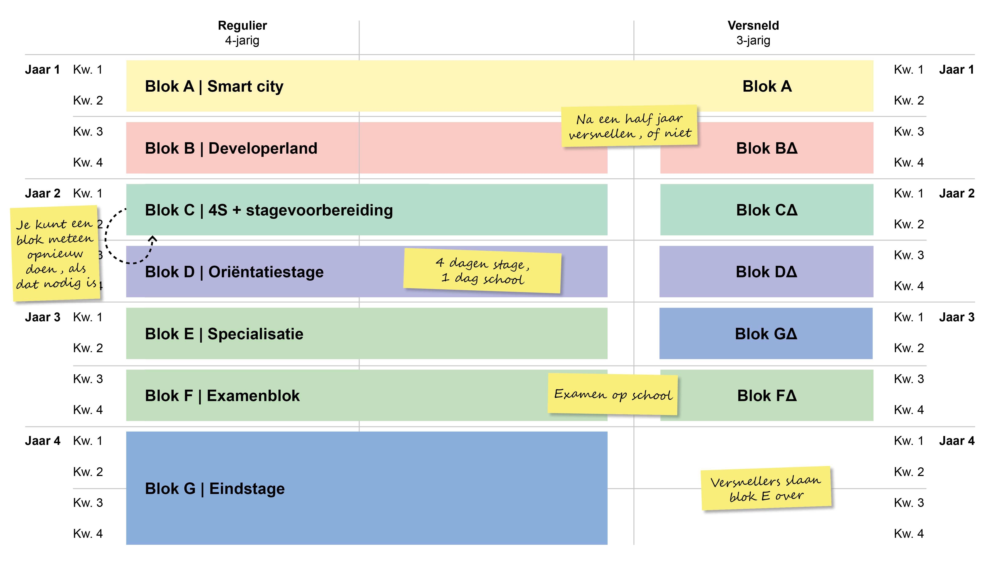

Wordt software developer bij Curio
Ben je gepassioneerd door technologie en wil je de wereld van softwareontwikkeling betreden? Bij Curio bieden we een uitstekend programma voor aspirant-softwareontwikkelaars. Leer de kunst van het programmeren en maak deel uit van een dynamische en groeiende gemeenschap van tech-liefhebbers. Ontdek hier alles wat je moet weten om een software developer bij Curio te worden.
Blokkensysteem
Bij Curio hanteren we een uniek blokkensysteem om je studie tot software developer soepel en flexibel
te maken. Ons academisch jaar is verdeeld in twee blokken van elk een half jaar, en onze opleiding
duurt in totaal vier jaar, van Blok A tot en met Blok G.
Het mooie van ons systeem is dat je geen volledig studiejaar hoeft over te doen als je een bepaald
blok niet haalt. Je kunt gewoon dat specifieke blok opnieuw doen, wat betekent dat je een half jaar
aan studietijd kunt besparen.
Dit systeem geeft je de flexibiliteit om op je eigen tempo te studeren en eventuele uitdagingen met
specifieke vakken aan te pakken zonder een heel jaar te verliezen.
Blokken in de studie
Hier zie je hoe alle blokken van deze studie
Versnellen
Bij Curio bieden we getalenteerde en gemotiveerde studenten de mogelijkheid om de opleiding tot
software developer in slechts drie jaar af te ronden, in plaats van de gebruikelijke vier jaar. Na
het succesvol afronden van Blok A, krijg je de kans om deel te nemen aan onze versnellingsklas.
In de versnellingsklas volg je dezelfde blokken als de reguliere studenten, maar met een extra vak
genaamd "Delta" (Δ). Dit vak bevat alle lessen van Blok E, die verdeelt zijn over de rest van de
studie.
Hierdoor kun je de opleiding in een kortere tijd voltooien.
Klassenrooster
Hier zie je hoe het rooster er mogelijk uit kan zien

Overzicht van vakken
Bij de opleiding tot software developer aan Curio krijg je de kans om een breed scala aan vakken te volgen, elk ontworpen om je voor te bereiden op een succesvolle carrière in softwareontwikkeling. Hier is een overzicht van de vakken die je zult tegenkomen tijdens je studie:
Portfolio
(Por)
Dit vak omvat individuele gesprekken met je mentor. Je hoeft alleen naar de mentor te gaan als je een gepland gesprek hebt. Het portfolio is een belangrijk instrument voor je persoonlijke en professionele ontwikkeling.
Mentoruur
Tijdens deze klassikale gesprekken met je mentor krijg je de mogelijkheid om vragen te stellen, advies te ontvangen en je studievoortgang te bespreken. Je mentor staat klaar om je te begeleiden en te ondersteunen.
Nederlands
(Ned)
In dit vak werk je aan je taalvaardigheid in het Nederlands. Het omvat lees- en schrijfvaardigheid, grammatica en communicatieve vaardigheden.
Engels
(Eng)
Engels is de wereldtaal van de technologie. In dit vak ontwikkel je je Engelse taalvaardigheid om effectief te kunnen communiceren in een internationale context.
Rekenen
Dit vak is gericht op het ontwikkelen van de rekenvaardigheden minimaal nodig zijn voor de studie. Het helpt je om essentiële rekenkundige vaardigheden te verwerven om succesvol te zijn in de softwareontwikkeling.
Praktijkondersteuning
(Pro)
Hier leer je verschillende manieren waarop software-ontwikkelaars succesvolle projecten realiseren, inclusief ondersteuning en praktische aspecten.
Praktijk
(Pra)
In dit vak ga je hands-on aan de slag met projecten, variërend van het oplossen van tickets tot het bouwen van complete websites. Dit is waar je je technische vaardigheden in de praktijk brengt.
Webdevelopment
(Web)
In dit vak leer je de kunst van het ontwikkelen van websites. Je verwerft de vaardigheden om aantrekkelijke en functionele websites te creëren.
Native-applicatieontwikkeling
(native)
Dit vak richt zich op het ontwikkelen van native apps, met een focus op het creëren van Windows-applicaties.
Delta
(Del)
Alleen versnellende studenten krijgen Delta. Dit vak is hetzelfde als pra, alleen uitgebreider met de lesstof van blok E.